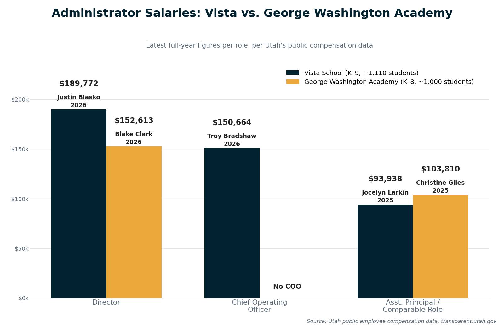

Por Qué Existe Este Sitio
Este sitio fue organizado por un grupo de padres de familia preocupados que creen que varias decisiones recientes de la Junta Directiva de Vista School y de la administración actual de Vista merecen un análisis más detenido. Estamos dialogando directamente con la Junta Directiva de Vista School y con la Junta Estatal de Escuelas Autónomas de Utah para exigir mayor transparencia y rendición de cuentas — y aquí es donde mantenemos ese esfuerzo de manera pública: las cartas enviadas, las reuniones realizadas, y las políticas que se supone protegen a las familias.
“La confianza requiere transparencia; la transparencia genera confianza.”
— Oficina del Auditor Estatal de Utah, iniciativa Transparent Utah
Cartas de Preocupación
Lea las cartas escritas por padres, personal, y miembros de la comunidad a la administración de Vista, a la Junta Directiva, y a la junta estatal de escuelas autónomas — y agregue la suya. (Las cartas individuales se muestran en el idioma en que fueron enviadas, mayormente inglés.)
Reuniones
Vea en vivo las reuniones de la Junta Directiva y las reuniones comunitarias, consulte el horario actualizado automáticamente, o vea una grabación anterior.
Políticas y Derechos
Una biblioteca con función de búsqueda de las políticas de escuelas autónomas de Utah y USBE, y los recursos sobre los derechos de los padres.
“Hindsight Is 20/20”
— Dr. Justin Blasko, describiendo una lección de un antiguo jefe en el Distrito Escolar de Monroe, citado por St. George News cuando Vista lo contrató (2023). (En español: "En retrospectiva, todo se ve claro.")
El actual Director Ejecutivo de Vista, el Dr. Justin Blasko, fue nombrado en agosto de 2023. Antes de llegar a Vista, Blasko fue Superintendente del Distrito Escolar de Monroe, en el estado de Washington, donde fue puesto en licencia administrativa en diciembre de 2021, después de que una investigación independiente confirmara quejas de acoso, intimidación, y conducta poco profesional hacia el personal. Renunció en julio de 2022 con un paquete de indemnización de aproximadamente $396,000. St. George News informó, en el momento en que Vista lo contrató, que los padres expresaron preocupaciones tanto por este historial como por la falta de comunicación de la Junta Directiva en torno a la decisión.
![Organigrama de Vista School: Junta Directiva de Vista School en la parte superior, luego el Dr. Justin Blasko como Director Ejecutivo. Bajo su supervisión: Christine Giles (Subdirectora), Skyler Perkes (Recursos Humanos), y Troy Bradshaw (Director de Operaciones). Bajo Giles: Jocelyn Larkin (Directora de K-5) con Maestros de K-5, Chad Allman (Director de 6-9) con Maestros de 6-9, Alicia Hutchinson (Coordinadora de Educación Especial), Katelynn George (Coordinadora del Título 1), Jenna Ayers (Entrenadora de Comportamiento), LaNessa Stevens (Entrenadora de Aprendizaje), y Marilyn Russell (Coordinadora de ESL). Bajo Perkes: Bruce Hatch (Director de Evaluación / Especialista en TI) y Marie Ehlers (Consejera Escolar Principal, 7-9), quien supervisa a Danielle Robb (Trabajadora Social Escolar), Shelli Jones (Consejera de K-6), y Nicole Richins (Asesora de Preparación Universitaria y Profesional / Consejo Estudiantil). Bajo Bradshaw: Servicio de Alimentos, Oficina de Negocios, Transporte, Oficina de TI, e Instalaciones. Títulos vigentes según vistautah.com; la Coordinadora de Educación Especial y algunos títulos de entrenadores difieren del organigrama original presentado en la reunión de la junta, que enumeraba nombres/títulos anteriores para esos puestos.](../assets/leadership/vista-org-chart.png)
El organigrama de Vista, tal como se presentó en una reunión pública de la Junta Directiva, redibujado aquí para facilitar su lectura. Fuente: vistautah.com.
Rotación Administrativa y de Maestros
Recopilado por padres de Vista usando la base de datos pública de compensación de Utah, Transparent Utah, y redibujado aquí para facilitar su lectura. Las líneas verticales punteadas marcan los años en que Vista cambió de director. Estas gráficas fueron elaboradas por padres de familia, y no fueron producidas ni verificadas de forma independiente por Saving Vista School — los datos subyacentes son públicos y se pueden verificar directamente en transparent.utah.gov.

Años combinados de experiencia de los maestros que dejaron Vista, por año.

Número de maestros que dejaron Vista, por año.
Matrícula
Presentado en la reunión de la Junta Directiva de Vista del 29 de julio de 2026, redibujado aquí para facilitar su lectura.

Matrícula por grado, agosto de 2026, comparada con las metas propias declaradas por la escuela.
Para una confirmación independiente, la Junta Estatal de Escuelas Autónomas de Utah publica su propio conteo oficial de matrícula para cada escuela autónoma cada año.

El conteo oficial de Vista al 1 de octubre, 2022–2026, según el panel del Utah Charter Access Point de la Junta Estatal de Escuelas Autónomas de Utah.
Salarios de los Administradores
Los salarios de los administradores de Vista, comparados con los de George Washington Academy, una escuela autónoma cercana de tamaño similar, según la base de datos pública de compensación de empleados de Utah, Transparent Utah.

Salarios de los administradores de Vista comparados con los de George Washington Academy, según los datos públicos de compensación de Utah.
Fuentes
- St. George News: "Hindsight is 20/20": Vista School in Ivins welcomes new director amid concerns from parents (11 de agosto de 2023)
- HeraldNet: "'Expletive,' 'idiot': Scathing report paints Monroe schools' supe as bully" (27 de mayo de 2022)
- Seattle Times: Monroe superintendent to resign, receive nearly $400K despite complaints about toxic behavior
- DocumentCloud: Independent investigation report into complaints against then-Superintendent Justin Blasko, Monroe School District
Los títulos de estas fuentes se dejan en su idioma original de publicación (inglés).